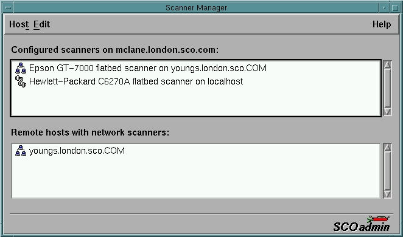

The SCOadmin Scanner Manager
Manual Configuration
scanimage
xscanimage
xsane
xcam
SANE is a universal scanner interface. The value of such a universal interface is that it allows writing just one driver per image acquisition device rather than one driver for each device and application. So, if you have three applications and four devices, traditionally you'd have had to write 12 different programs. With SANE, this number is reduced to seven: the three applications plus the four drivers. Of course, the savings get even bigger as more and more drivers and/or applications are added.
Not only does SANE reduce development time and code duplication, it also raises the level at which applications can work. As such, it will enable applications that were previously unheard of in the UNIX world. While SANE is primarily targeted at a UNIX environment, the standard has been carefully designed to make it possible to implement the API on virtually any hardware or operating system.
While SANE is an acronym for ``Scanner Access Now Easy'' the hope is of course that SANE is indeed sane in the sense that it will allow easy implementation of the API while accommodating all features required by today's scanner hardware and applications. Specifically, SANE should be broad enough to accommodate devices such as scanners, digital still and video cameras, as well as virtual devices like image file filters.
If you're familiar with TWAIN, you may wonder why there is a need for SANE. Simply put, TWAIN does not separate the user-interface from the driver of a device. This, unfortunately, makes it difficult, if not impossible, to provide network transparent access to image acquisition devices (which is useful if you have a LAN full of machines, but scanners connected to only one or two machines; it's obviously also useful for remote-controlled cameras and such). It also means that any particular TWAIN driver is pretty much married to a particular GUI API (be it Win32 or the Mac API). In contrast, SANE cleanly separates device controls from their representation in a user-interface. As a result, SANE has no difficulty supporting command-line driven interfaces or network-transparent scanning. For these reasons, it is unlikely that there will ever be a SANE backend that can talk to a TWAIN driver. The converse is no problem though: it would be pretty straight forward to access SANE devices through a TWAIN source. In summary, if TWAIN had been just a little better designed, there would have been no reason for SANE to exist, but things being the way they are, TWAIN simply isn't SANE.
pkgadd -d `pwd`/glibs-2.0.3.pkgThen pkgadd the SANE package:
# scoadmin scanner
Note: The GUI doesn't support the configuration of QuickCam cameras yet. The devices have to configured manually by editing the appropriate configuration files in /usr/local/etc/sane.d.

The command scanimage -L lists the devices that are available, e.g.
Note: Not all scanners support the same set of options. The UMAX S6E for example doesn't support the 'brighntess' and the 'contrast' parameters.
Note: There seems to be a bug in the hp backend. The value for the resolution will be ignored if the resolution parameter is specified before the mode parameter, and the mode is set to 'color', i.e.:
| UMAX Vista-S6E | UMAX Astra 610S | HP ScanJet 6250C | HP Scanjet 5P | |
| Adaptec AIC-7880
(adsl) |
Usually works without problems. From time to time SCSI commands time out and cause the machine to hang. If ptf7049e is installed the machine will recover. | Usually works without problems. From time to time SCSI commands time out and cause the machine to hang. If ptf7049e is installed the machine will recover. | No problems. | No problems. |
| Adaptec AHA-2940
(adsl) |
Usually works without problems. From time to time SCSI commands time out and cause the machine to hang. If ptf7049e is installed the machine will recover. | Usually works without problems. From time to time SCSI commands time out and cause the machine to hang. If ptf7049e is installed the machine will recover. | No problems. | - not tested - |
| Buslogic BT-958
(blc) |
Scanner calibration fails in color mode. Gray and Lineart are ok. | No problems. | No problems. | - not tested - |
| Symbios SYM22801
(c8xx) |
Scanner initialisation fails. Application runs in a loop. This only happens on UW 7.1. Fixed in UW 7.1.1 | - not tested - | Kernel panics (only UW 7.1). No problems on a system that runs UW 7.1.1. | - not tested - |
| Symbios 8751sp
(c8xx) |
Scanner initialisation fails. Application runs in a loop. Fixed in 7.1.1 | Scanner initialisation fails. Application runs in a loop. | Kernel panics (only UW 7.1). No problems on a system that runs 7.1.1. | - not tested - |
| DPT PM2124
(dpt) |
No problems. | No problems. | Scanner initialisation fails. First TEST_UNIT_READY command fails with SDI_CKSTAT. | - not tested - |
Not all scanner identify themselves as scanners (SCSI class 3). Some scanners vendors, like HP and Epson chose to report their devices as 'Processing Devices' (SCSI class 6). These scanners are not autodetected by the SCOadmin Scanner Manager.
The SANE Home Page
The XSANE Home Page
Last update: 26/01/2000